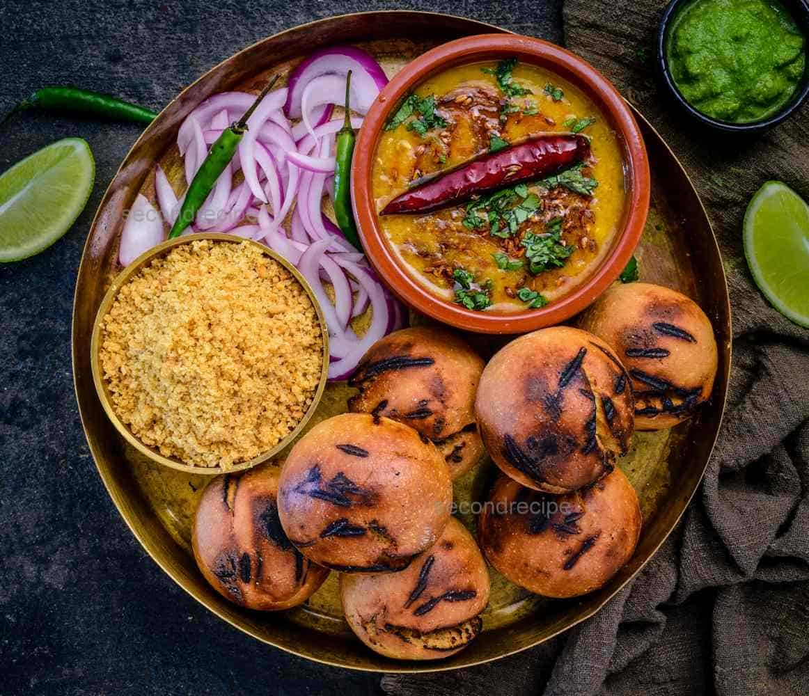
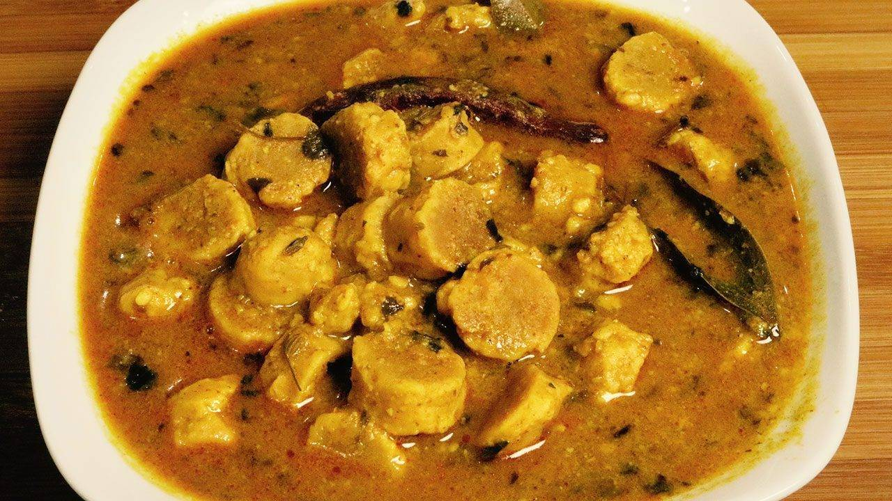
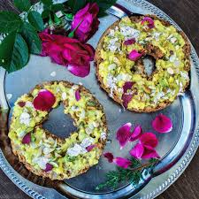
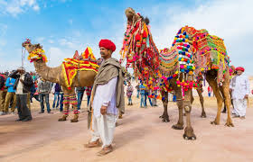
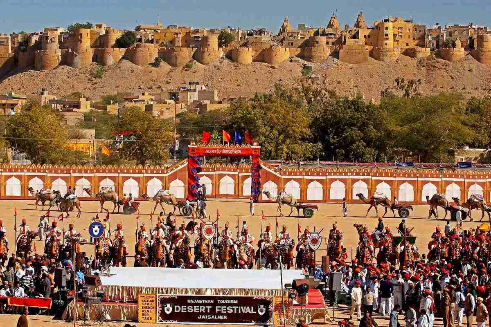

Rajasthan, often called the "Land of Kings," is famous for its majestic forts, royal palaces, and rich history.
Cities like Jaipur, Udaipur, and Jodhpur showcase stunning architecture, vibrant handicrafts, and a royal lifestyle
that continues to fascinate visitors.
Rajasthan offers unique food experiences with dishes like Dal Baati Churma, Gatte ki Sabji, and spicy Laal Maas.
Sweets such as Ghewar and Mawa Kachori are popular festive delicacies.

Dal Baati Churma

Gatte ki Sabji

Ghewar Sweet
Festivals & Celebrations
Rajasthan is home to colorful festivals such as Pushkar Camel Fair, Desert Festival, and Gangaur.
These celebrations are marked by folk dances, music, decorated camels, and vibrant processions.

Pushkar Camel Fair

Desert Festival JaisalmerGangaur Festival